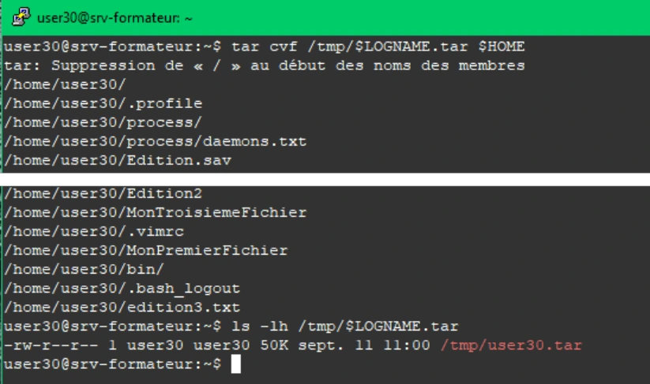
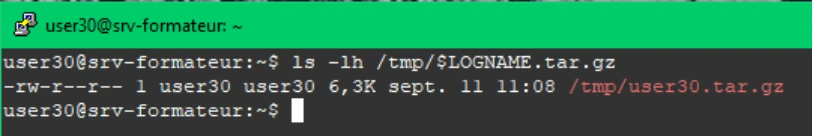
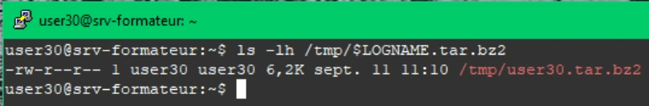
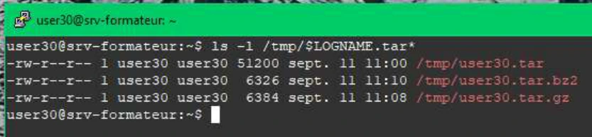
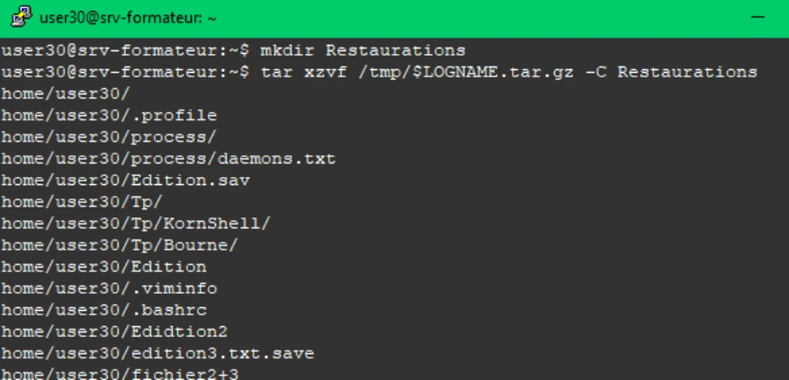
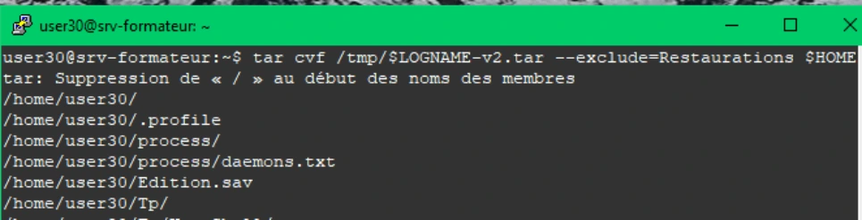

Transcription du document de formation ; texte et captures isolées sont distincts de l’aide pédagogique.
Archivage et compression
TP du Module 08 – Mécanismes Linux et Bash avancé
Avant de démarrer ce TP, il convient d’avoir suivi les vidéos des modules 8.
Avoir effectué le TP précèdent
Durée estimée
45 à 60 minutes
En fonction du module que vous venez de parcourir, vous trouverez les commandes nécessaires pour répondre aux questions.
tar -cvf /tmp/$LOGNAME.tar $HOMEls -lh /tmp/$LOGNAME.tar
Archivage et compression
tar -czvf /tmp/$LOGNAME.tar.gz $HOMEls -lh /tmp/$LOGNAME.tar.gztar -cjvf /tmp/$LOGNAME.tar.bz2 $HOMEls -lh /tmp/$LOGNAME.tar.bz2ls -l /tmp/$LOGNAME.tar*Restaurer votre sauvegarde dans ce répertoire en une seule instruction.
mkdir $HOME/Restaurationstar -xzvf /tmp/$LOGNAME.tar.gz -C Restaurations


Archivage et compression
tar -cvf /tmp/$LOGNAME-v2.tar --exclude=Restaurations $HOMEtouch new_fichier.txttar -uvf /tmp/$LOGNAME-v2.tar ~/new_fichier.txt

Archivage et compression
tar -tf /tmp/$LOGNAME-v2.tar
/home/user30/.profile
/home/user30/process/
/home/user30/process/daemons.txt
/home/user30/Edition.sav
/home/user30/new_fichier.txt
/home/user30/Tp/
/home/user30/Tp/KornShell/
/home/user30/Tp/Bourne/
/home/user30/Edition
/home/user30/.viminfo
/home/user30/.bashrc
/home/user30/Edidtion2
/home/user30/edition3.txt.save
/home/user30/fichier2+3
/home/user30/.bash_history
/home/user30/MonDeuxiemeFichier
/home/user30/resultats/
/home/user30/resultats/compteur.txt
/home/user30/resultats/fichiers.conf
/home/user30/Edition2
/home/user30/MonTroisiemeFichier
/home/user30/.vimrc
/home/user30/MonPremierFichier
/home/user30/bin/
/home/user30/.bash_logout
/home/user30/edition3.txt